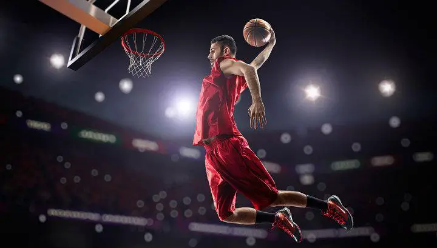
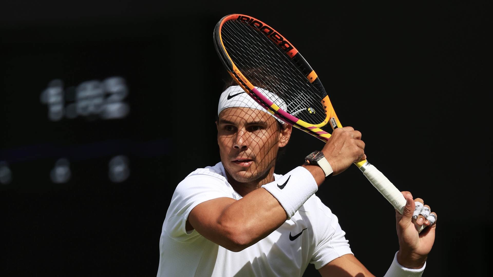

Ejemplos
- Futbol
- Baloncesto
- Tenis
- ciclismo
FUTBOL

El fútbol, futbol o balompié es un deporte de equipo jugado entre dos conjuntos de once jugadores cada uno, mientras los árbitros se ocupan de que las normas se cumplan correctamente.
BALONCESTO
Juego entre dos equipos de cinco jugadores cada uno, cuyo objetivo es introducir el balón en la cesta o canasta del contrario, situada a una altura determinada.

TENIS
Juego entre dos personas o dos parejas, en que los jugadores, a ambos lados de la red, se lanzan con raquetas una pelota con el propósito de que la otra parte no acierte a devolverla.

CICLISMO

El ciclismo es un deporte en el que se utiliza una bicicleta para recorrer circuitos al aire libre o en pista cubierta y que engloba diferentes especialidades.